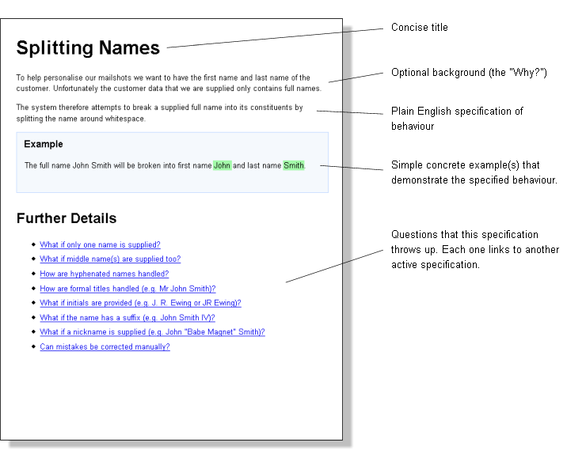

Concordion is an open source framework for Java that lets you turn a plain English description of a requirement
into an automated test
— an active specification.
[See A Realistic Example]
Testing a system meets its specifications
Plain English specifications
Rather than forcing product owners to specify requirements in a specially structured language, Concordion lets you write them in plain English using paragraphs, tables and proper punctuation. This makes the specifications much more natural to read and write, and helps everyone to understand and agree about what a feature is supposed to do.
Always bang up-to-date
Concordion specifications are active. Behind the scenes, they are linked to the system under test and therefore do not go out-of-date. If a change is made to the system's behaviour then the tests associated with the relevant specification will fail and let you know.

Complex behaviours are decomposed
Each question at the bottom of the specification links to another active specification and so on until you have either run out of questions or the answer is "Out of Scope". In this way, a complex behaviour can be broken down into small, focused and easily understood requirements.
How it Works

Specifications are written in simple HTML. Developers instrument the concrete examples in each specification with commands (e.g. "set", "execute", "assertEquals") that allow the examples to be checked against a real-life system.
The instrumentation is invisible to a browser, but is processed by a Java fixture class that accompanies the specification and acts as a buffer between the specification and the system under test. The fixture is also a JUnit test case, so it's easy to run and integrate into an automated build. The results of running the examples are exported with green and red indicating successes and failures.
Some example instrumentation:
<p>
When <span concordion:set="#firstName">Bob</span> logs in a greeting
<span concordion:assertEquals="greetingFor(#firstName)">Hello Bob!</span>
should be displayed.
</p>
Technique
With the right technique, active specifications can boost agility and make it easier to sustain a test-driven approach.
Separating requirements from implementation helps refactoring
Hiding all the implementation-specific detail inside the Java fixture code gives you freedom to change the internal design of your application confident that you'll catch inadvertent changes to required behaviour. The specifications don't change when you refactor.
One problem with unit tests is that they mix together customer requirements with tests of internal classes. With active specifications you make a clear distinction and it's much easier to know what's truly important and what can be changed. The specifications describe the customer requirements whereas the unit tests verify internal implementation.
Specifications can be as thorough as unit tests
Specifications can cover every nuance of behaviour that is important to the customer. There is no reason why the specifications cannot do this to the same depth as JUnit tests. But instead of the onus being on the developer to think up all the fine-detail tests, with active specifications, testers and analysts can also get involved.
Specifications can be hooked in at different levels
The fixture code can be hooked in at unit, component, sub-system or system level depending on the level of confidence required traded against speed of test execution. The decision does not affect the specifications themselves. They just describe the behaviour without explaining how it's implemented or how to test it.
Agreeing details up-front allows finer control over scope
Active specifications can be used to define detailed acceptance criteria for a story. This allows the product owner to make decisions about scope and behaviour that would otherwise be left to the programmers. This reduces gold-plating and allows the product owner to make conscious trade-offs of scope against development cost. E.g. "Let's not handle this [edge case] in this iteration as it's very unlikely to happen, and there are other stories that I want implemented that offer more value".
Test coverage no longer relies on developer self-discipline
Automated unit tests, written by developers, are at the heart of most traditional agile approaches. Unfortunately, because unit tests are neither visible to management nor the product owner, there's always a feeling of pressure to cut corners for short-term gains in development speed. In the long-term this can be fatal for agility, but it takes constant willpower to resist the temptation and many agile projects eventually succumb.
Driving a project with active specifications reduces this problem. Since the specifications are written in plain English, not only are they readable and visible outside of the development team, but they are also co-authored with the product owner and testers. Keeping the quality high becomes a group effort.
Developers may continue to write some unit tests to drive aspects of the internal design but the project no longer relies on them for test coverage of external behaviour. The active specifications take over that role. Since writing the specifications is at the core of the visible process – nothing is developed without active specifications describing the requirements – it becomes practically impossible to cut corners.
Further information
You may also find it useful to subscribe to my blog: http://blog.davidpeterson.co.uk for the latest news and ideas.
Spelling of Concordion
Several people have told me that they couldn't find this page when they searched because they were, quite understandably, spelling "Concordion" as Concordium or Concordian. Hopefully, now I have written the words Concordium and Concordian on this page the search engines will find it even with the misspelling.